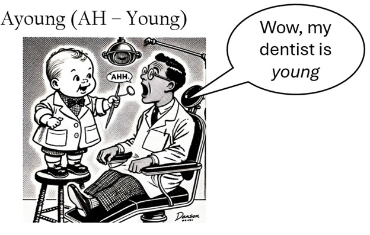

Ayoung Chun
Postdoctoral Research Associate
Program on American Institutional Renewal
Purdue University
Hi! I am Ayoung Chun, a Postdoctoral Research Associate in the Program on American Institutional Renewal (PAIR) at Purdue University. I received my Ph.D. in Political Science from the University of California, Los Angeles in 2025.
My research examines how campaign finance shapes political representation and legislative institutions in American politics. I study how relationships between donors and legislators develop, how political institutions structure those relationships, and how financial support is translated into influence inside Congress and state legislatures.
My research has appeared in Legislative Studies Quarterly and has received the APSA State Politics and Policy Section’s Best Graduate Student Paper Award and the APSA Political Organizations and Parties Section’s Virginia Gray Graduate Student Research Award.
I am on the 2026–2027 academic job market. Read my job market paper.
Name pronunciation
My name is pronounced AH-young: “AH” as in the sound you make at the dentist, followed by “young.”
